Power BI com dados reais do IBGE: API, modelo estrela e DAX
Você vai buscar população e PIB direto da API do IBGE, ligar as tabelas com relacionamentos, escrever medidas DAX com CALCULATE, ALL e RANKX e montar um painel que responde perguntas reais sobre o Brasil.
- Nível
- Básico → Intermediário
- Duração
- 3 horas (2h guiado + 1h de atividades)
- Você vai precisar
- Power BI Desktop e internet (sem internet, use o Plano B no fim da aula)
- Conteúdos
- Power QueryAPI WebJSONModelo estrelaRelacionamento 1:NDAXCALCULATEALLRANKXVAR
01As perguntas que o painel vai responder
Todo dashboard começa com perguntas, nunca com gráficos. Guarde estas quatro; cada passo da aula existe para respondê-las:
| Pergunta | Por que alguém se importa | Medida que responde |
|---|---|---|
| Quais estados têm a maior economia? | Mostra onde está a produção do país: onde investir, onde há mais empregos. | PIB (R$) |
| Onde a riqueza por habitante é maior? | Um estado grande pode ser pobre por pessoa. O PIB per capita compara estados de tamanhos diferentes de forma justa. | PIB per capita |
| Quão concentrada é a economia? | Concentração regional é tema de política pública: desigualdade, guerra fiscal, migração. | % PIB Brasil |
| Quem cresceu mais de um ano para o outro? | O tamanho mostra o passado; o crescimento mostra a tendência. | Var. % PIB |
O IBGE é a fonte oficial de estatísticas do Brasil. Os dados são públicos, gratuitos, atualizados todo ano e têm uma API: o Power BI busca sozinho, e o relatório se atualiza com um clique quando sair a estimativa nova.
02Conhecendo a fonte: IBGE e SIDRA
Analista que não conhece a fonte não sabe explicar o número que mostra.
Acesse sidra.ibge.gov.br/tabela/6579. O SIDRA é o “banco de tabelas” do IBGE; a tabela 6579 traz a População residente estimada. Se aparecer o balão “Dúvidas”, clique em Fim.
Toda tabela do SIDRA tem três partes: Variável (o que é medido), Ano (quando) e Unidade Territorial (onde).
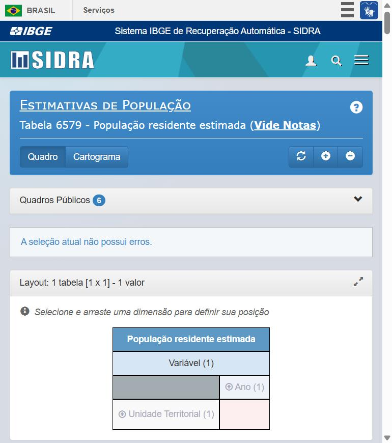
1No bloco Ano, marque também 2025, 2024, 2021 e 2020.
Não existem estimativas para 2022 e 2023: nesses anos o IBGE fez o Censo. Essa lacuna vai aparecer quando cruzarmos população com PIB.
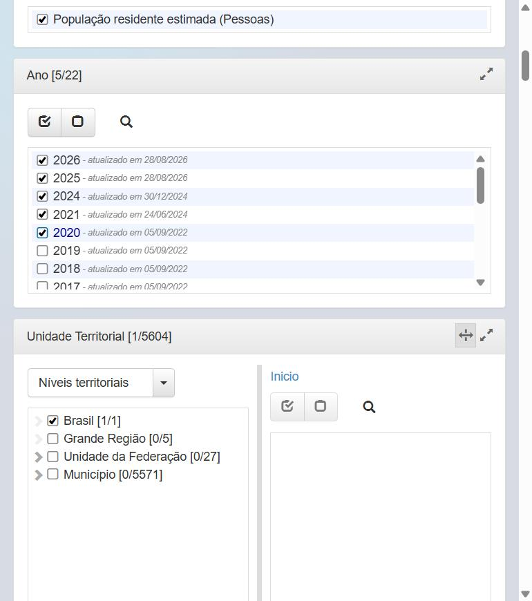
2Em Unidade Territorial, desmarque Brasil e marque Unidade da Federação [27/27].
O total Brasil é a soma dos estados. Importando os dois níveis, o Power BI soma tudo e o resultado sai dobrado. Traga só o nível mais detalhado.
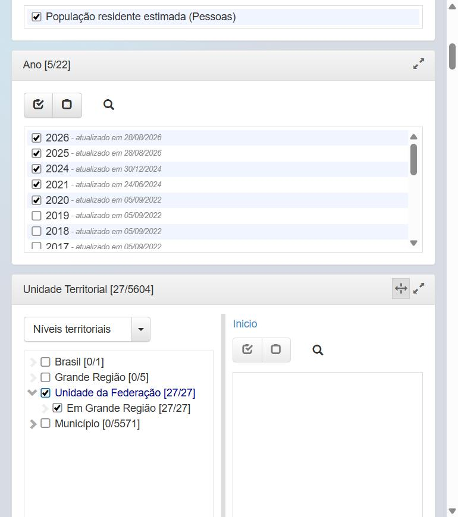
3Clique em Visualizar. Conferir na fonte é hábito profissional: quando o painel mostrar Roraima com 761.012 habitantes em 2026, você vai saber que bate com o IBGE.
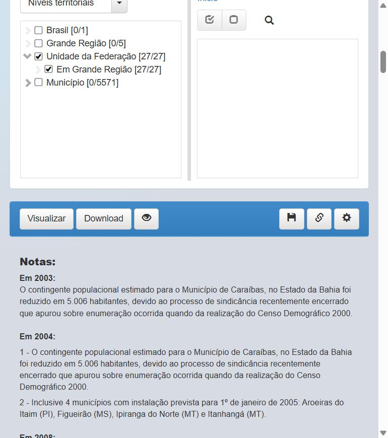
45Os números estão em pessoas, com separador de milhar brasileiro (ponto).
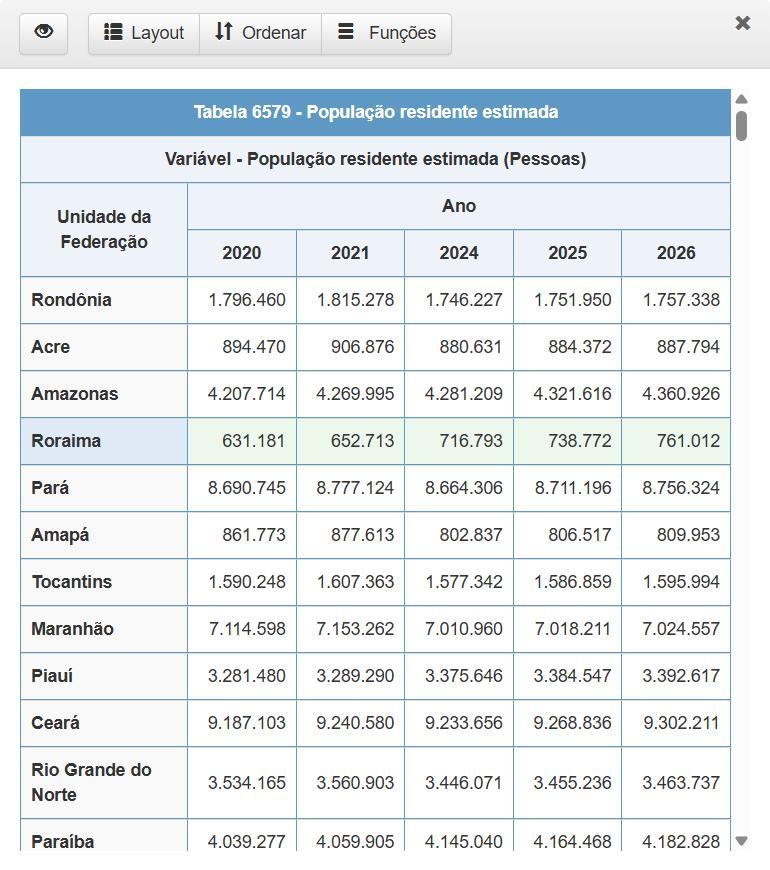
Clique no ícone de corrente (Links de Compartilhar). O campo Parâmetros para a API é o endereço que o Power BI vai usar:
/t/6579 | tabela 6579 |
/n3/all | nível 3 (UF), todas |
/v/9324 | variável 9324, população estimada |
/p/last%205 | os 5 últimos períodos (%20 é o espaço) |
Com períodos relativos, quando o IBGE publicar 2027 o relatório passa a trazer 2027 sozinho ao clicar em Atualizar. Ano fixo na URL faz o relatório envelhecer.
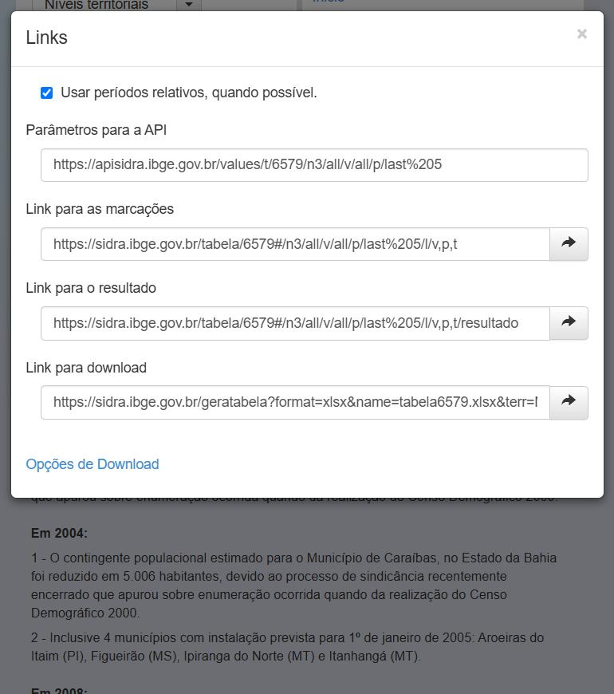
6Abra sidra.ibge.gov.br/tabela/5938. Variável 37, últimos 5 anos (2019 a 2023), Unidade da Federação.
O PIB vem em Mil Reais. O valor 3.444.814.033 de São Paulo em 2023 significa R$ 3,44 trilhões. Vamos multiplicar por 1.000 no Power Query.
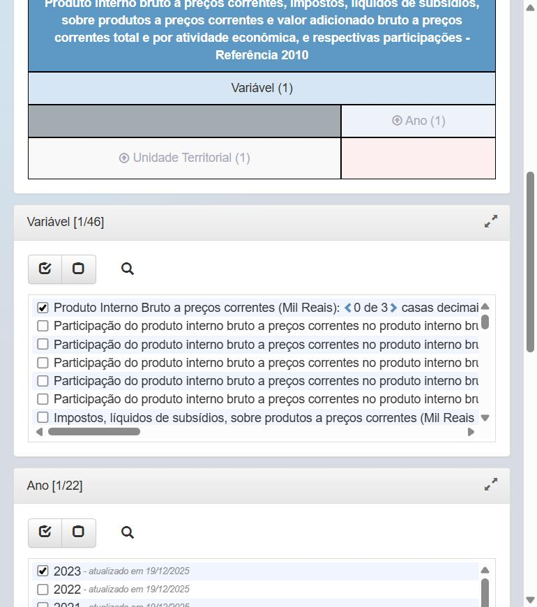
7Abra https://servicodados.ibge.gov.br/api/v1/localidades/estados. O resultado é um JSON: uma lista de estados e, dentro de cada um, o objeto regiao (um Record no Power Query).
O campo id (11 = Rondônia, 35 = São Paulo) é o mesmo código do SIDRA. É ele que liga as tabelas.
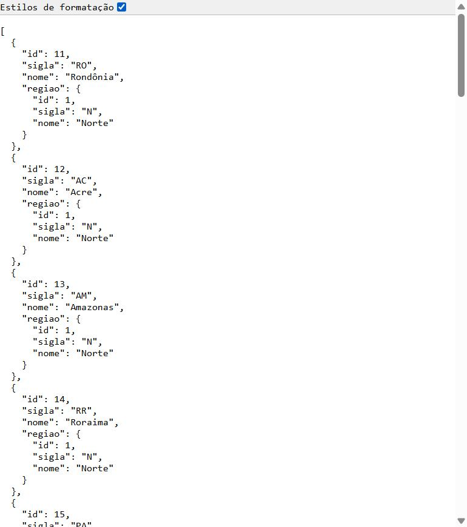
8903Importando com Power Query
Nada de baixar planilha: o Power BI conversa direto com a API.
Abra o Power BI Desktop e clique em Relatório em branco.
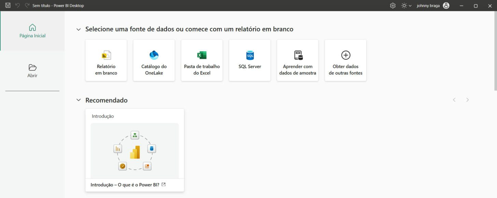
1Em Página Inicial, clique na setinha de Obter dados e escolha Web. O conector Web lê qualquer endereço que devolve dados: HTML com tabela, CSV ou API JSON.
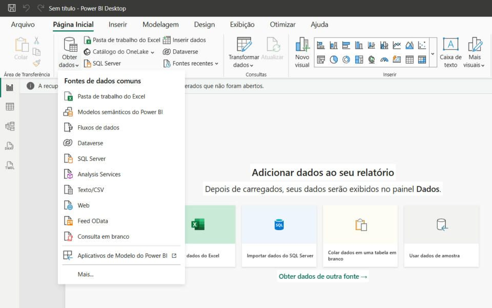
23Mantenha Básico, cole a URL e clique em OK. Se pedir autenticação, escolha Anônimo → Conectar.
https://servicodados.ibge.gov.br/api/v1/localidades/estados
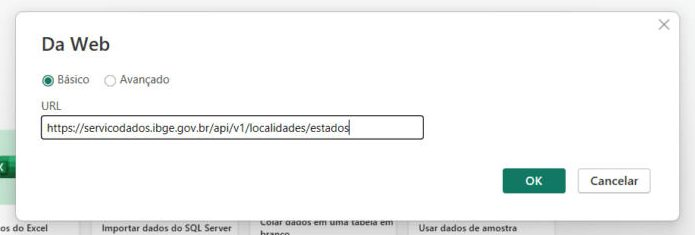
45O Editor abriu com 27 linhas e 6 colunas. As Etapas Aplicadas são a receita: Fonte → Convertido para Tabela → Column1 Expandido → regiao Expandido → Tipo Alterado. Renomeie a consulta para dEstado.
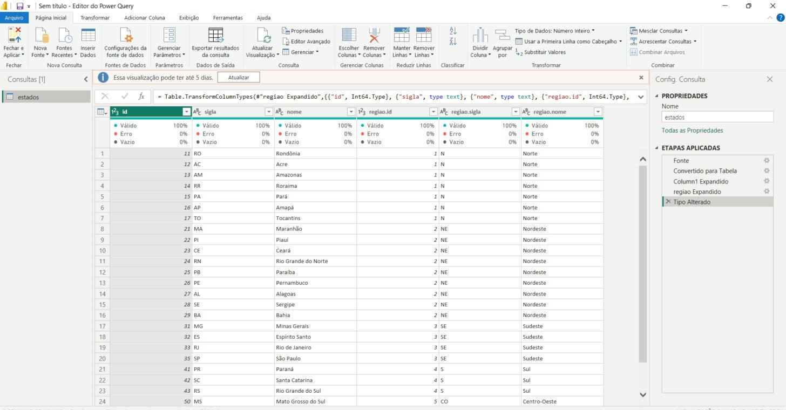
678Clique em Editor Avançado e substitua o código por este, com nomes de coluna claros:
let
Fonte = Json.Document(Web.Contents("https://servicodados.ibge.gov.br/api/v1/localidades/estados")),
Tabela = Table.FromRecords(Fonte),
Regiao = Table.ExpandRecordColumn(Tabela, "regiao",
{"id", "sigla", "nome"},
{"id_regiao", "sigla_regiao", "regiao"}),
Renomeado = Table.RenameColumns(Regiao,
{{"id", "id_uf"}, {"sigla", "sigla_uf"}, {"nome", "uf"}}),
Tipos = Table.TransformColumnTypes(Renomeado, {
{"id_uf", Int64.Type}, {"sigla_uf", type text}, {"uf", type text},
{"id_regiao", Int64.Type}, {"sigla_regiao", type text}, {"regiao", type text}})
in
TiposNova Fonte → Consulta Nula, renomeie para fPopulacao, abra o Editor Avançado e cole:
let
Url = "https://apisidra.ibge.gov.br/values/t/6579/n3/all/v/9324/p/last%205",
Fonte = Json.Document(Web.Contents(Url, [Headers = [Accept = "application/json"]])),
// a 1ª linha do SIDRA é o "dicionário" das colunas (D1C = código da UF...). Pulamos.
SemCabec = List.Skip(Fonte, 1),
Tabela = Table.FromRecords(SemCabec),
Colunas = Table.SelectColumns(Tabela, {"D1C", "D3N", "V"}),
Renomeado = Table.RenameColumns(Colunas,
{{"D1C", "id_uf"}, {"D3N", "ano"}, {"V", "populacao"}}),
Tipos = Table.TransformColumnTypes(Renomeado,
{{"id_uf", Int64.Type}, {"ano", Int64.Type}, {"populacao", Int64.Type}}, "en-US")
in
TiposResultado esperado: 135 linhas (27 UFs × 5 anos).
A API devolve 11 colunas, mas nome do estado, variável e unidade se repetem em todas as linhas. O nome já está em dEstado. Fato bom é “magro”: só chaves e números.
let
Url = "https://apisidra.ibge.gov.br/values/t/5938/n3/all/v/37/p/last%205",
Fonte = Json.Document(Web.Contents(Url, [Headers = [Accept = "application/json"]])),
SemCabec = List.Skip(Fonte, 1),
Tabela = Table.FromRecords(SemCabec),
Colunas = Table.SelectColumns(Tabela, {"D1C", "D3N", "V"}),
Renomeado = Table.RenameColumns(Colunas,
{{"D1C", "id_uf"}, {"D3N", "ano"}, {"V", "pib_mil_reais"}}),
Tipos = Table.TransformColumnTypes(Renomeado,
{{"id_uf", Int64.Type}, {"ano", Int64.Type}, {"pib_mil_reais", type number}}, "en-US"),
// converte "mil reais" para reais: evita confusão de unidade no relatório
EmReais = Table.AddColumn(Tipos, "pib_reais", each [pib_mil_reais] * 1000, type number),
Final = Table.RemoveColumns(EmReais, {"pib_mil_reais"})
in
Final135 linhas, anos 2019 a 2023. Clique em Fechar e Aplicar.
O "en-US" garante que o texto "1796460" vire número igual em qualquer computador, em português ou inglês.
04Relacionamentos: o modelo estrela
Duas fatos (população e PIB) obedecendo aos mesmos filtros de estado e de ano.
População tem 2020, 2021, 2024–2026; PIB tem 2019–2023. Precisamos de uma tabela com todos os anos. Modelagem → Nova tabela:
dAno =
VAR AnoIni = MIN ( MIN ( fPopulacao[ano] ), MIN ( fPIB[ano] ) )
VAR AnoFim = MAX ( MAX ( fPopulacao[ano] ), MAX ( fPIB[ano] ) )
RETURN
SELECTCOLUMNS ( GENERATESERIES ( AnoIni, AnoFim, 1 ), "Ano", [Value] )Resultado: coluna Ano de 2019 a 2026 (8 linhas), dinâmica.
| De (lado 1) | Para (lado *) | Cardinalidade | Filtro |
|---|---|---|---|
| dEstado[id_uf] | fPopulacao[id_uf] | 1:* | Único |
| dEstado[id_uf] | fPIB[id_uf] | 1:* | Único |
| dAno[Ano] | fPopulacao[ano] | 1:* | Único |
| dAno[Ano] | fPIB[ano] | 1:* | Único |
Nas duas fatos o id_uf se repete. Ligar fato com fato gera relação muitos-para-muitos, com totais errados. Regra do modelo estrela: fato só se liga a dimensão.
- Oculte
id_ufeanodas fatos (botão direito → Ocultar na exibição de relatório). - Em
dAno[Ano], Resumir por: Não resumir. - Em
dEstado[uf], Categoria de dados: Estado ou Província, para mapas.
05Medidas DAX
Crie a tabela _Medidas (Inserir dados) e use Nova medida para cada fórmula.
População = SUM ( fPopulacao[populacao] ) PIB (R$) = SUM ( fPIB[pib_reais] )
2021: População = 213.317.639 e PIB = R$ 9,01 tri. 2023: PIB = R$ 10,94 tri.
PIB per capita = DIVIDE ( [PIB (R$)], [População] )
Análise: São Paulo tem o maior PIB, mas o Distrito Federal tem o maior PIB per capita (R$ 92.732 em 2021). O Maranhão fica em último (R$ 17.472): diferença de mais de 5 vezes no mesmo país.
Em 2022 e 2023 existe PIB mas não existe população estimada. Com DIVIDE, esses anos ficam em branco em vez de dar erro. Brasil 2021 = R$ 42.248.
% PIB Brasil =
DIVIDE (
[PIB (R$)],
CALCULATE ( [PIB (R$)], ALL ( dEstado ) ) -- PIB de todos os estados
)CALCULATE recalcula mudando filtros; ALL(dEstado) ignora o filtro de estado e região. O filtro de ano continua valendo.
Análise: em 2023, São Paulo tem 31,5% do PIB e o Sudeste 53,0%.
Ranking PIB per capita =
IF (
HASONEVALUE ( dEstado[uf] ),
RANKX ( ALL ( dEstado[uf] ), [PIB per capita], , DESC, Dense )
)1º DF, 2º MT, 3º SC, 4º SP, 5º RJ. Último: MA.
PIB Ano Anterior =
VAR AnoAtual = MAX ( dAno[Ano] )
RETURN
CALCULATE ( [PIB (R$)], dAno[Ano] = AnoAtual - 1 )
Var. % PIB =
DIVIDE ( [PIB (R$)] - [PIB Ano Anterior], [PIB Ano Anterior] )A VAR guarda o ano do filtro antes do CALCULATE trocá-lo. Análise: de 2022 para 2023 o PIB nominal cresceu 8,6%; Roraima (+19,1%), Amapá (+18,7%) e Alagoas (+17,9%) lideram; o Rio de Janeiro cresceu 1,7%.
06Visuais e análises
| Visual | Campos | Pergunta |
|---|---|---|
| Segmentação | dAno[Ano], seleção única | Qual ano analisar |
| 3 Cartões | PIB, População, PIB per capita | Visão geral |
| Barras | dEstado[sigla_uf] · PIB per capita | Riqueza por habitante |
| Barras | dEstado[regiao] · % PIB Brasil | Concentração |
| Linhas | dAno[Ano] · PIB (R$) | Crescimento |
| Tabela | uf, PIB, % PIB Brasil, Var. %, Ranking | Detalhe |
Prévia: como o seu painel deve ficar
Mesmos números que você importou. Clique nos anos: 2022 e 2023 não têm PIB per capita, efeito do DIVIDE.
PIB per capita por UF (R$)
% do PIB Brasil por região
PIB do Brasil por ano (R$ tri)
Prévia ilustrativa com os dados do IBGE.
Em vez de “PIB per capita por UF”, escreva “DF produz 5x mais por habitante que o Maranhão”.
07Erros comuns
Todos os estados mostram o mesmo valor
Falta relacionamento ou ele está inativo. Confira Gerenciar relações.
PIB mil vezes menor
Faltou a etapa EmReais (o SIDRA entrega em mil reais).
Expression.Error: coluna 'D1C' não encontrada
A API devolveu XML ou erro. Confira a URL (com %20) e o cabeçalho Accept = "application/json".
PIB per capita em branco
Correto para 2019, 2022 e 2023: falta população ou PIB. Explique no painel com uma caixa de texto.
O slicer mostra “Soma de Ano”
Em dAno[Ano], Resumir por: Não resumir.
08Atividades
A1 · Participação na população
BásicoCrie % População Brasil e compare com % PIB Brasil. Quais estados têm % do PIB maior que % da população?
A2 · Top 5
BásicoMostre só os 5 maiores PIB per capita usando o filtro N superior.
A3 · Crescimento populacional 2024–2026
IntermediárioCrie a medida com dois CALCULATE (2024 e 2026). Quem mais cresceu? Quem perdeu população?
Dica
VAR P24 = CALCULATE([População], dAno[Ano] = 2024) … RETURN DIVIDE(P26 - P24, P24). Não compare com 2021: as estimativas antes do Censo 2022 usavam outra base.
A4 · Faixas de riqueza
IntermediárioColuna calculada em dEstado: “Alta” (> R$ 50 mil), “Média” (30 a 50 mil), “Baixa”, usando o PIB per capita de 2021.
Dica
VAR PC = CALCULATE([PIB per capita], dAno[Ano] = 2021) e SWITCH(TRUE(), PC > 50000, "Alta", PC >= 30000, "Média", "Baixa"). O CALCULATE faz a transição de contexto: a linha do estado vira filtro.
A5 · Área e densidade (Censo 2022)
DesafioEncontre no SIDRA a tabela do Censo 2022 com área territorial das UFs, importe como fArea e crie Densidade (hab/km²). Faça uma dispersão PIB per capita × densidade.
A6 · Dashboard final
EntregaRelatório de 2 páginas (Visão Brasil e Comparar estados) com 3 conclusões escritas, cada uma com um número, e a nota de fonte do IBGE.
09Plano B: laboratório sem internet
Se a rede bloquear a API, use os mesmos dados (consulta de 06/10/2026): Página Inicial → Inserir dados → clique na primeira célula e cole.
dEstado (27 linhas)
id_uf sigla_uf uf sigla_regiao regiao 11 RO Rondônia N Norte 12 AC Acre N Norte 13 AM Amazonas N Norte 14 RR Roraima N Norte 15 PA Pará N Norte 16 AP Amapá N Norte 17 TO Tocantins N Norte 21 MA Maranhão NE Nordeste 22 PI Piauí NE Nordeste 23 CE Ceará NE Nordeste 24 RN Rio Grande do Norte NE Nordeste 25 PB Paraíba NE Nordeste 26 PE Pernambuco NE Nordeste 27 AL Alagoas NE Nordeste 28 SE Sergipe NE Nordeste 29 BA Bahia NE Nordeste 31 MG Minas Gerais SE Sudeste 32 ES Espírito Santo SE Sudeste 33 RJ Rio de Janeiro SE Sudeste 35 SP São Paulo SE Sudeste 41 PR Paraná S Sul 42 SC Santa Catarina S Sul 43 RS Rio Grande do Sul S Sul 50 MS Mato Grosso do Sul CO Centro-Oeste 51 MT Mato Grosso CO Centro-Oeste 52 GO Goiás CO Centro-Oeste 53 DF Distrito Federal CO Centro-Oeste
fPopulacao (135 linhas)
id_uf ano populacao 11 2020 1796460 11 2021 1815278 11 2024 1746227 11 2025 1751950 11 2026 1757338 12 2020 894470 12 2021 906876 12 2024 880631 12 2025 884372 12 2026 887794 13 2020 4207714 13 2021 4269995 13 2024 4281209 13 2025 4321616 13 2026 4360926 14 2020 631181 14 2021 652713 14 2024 716793 14 2025 738772 14 2026 761012 15 2020 8690745 15 2021 8777124 15 2024 8664306 15 2025 8711196 15 2026 8756324 16 2020 861773 16 2021 877613 16 2024 802837 16 2025 806517 16 2026 809953 17 2020 1590248 17 2021 1607363 17 2024 1577342 17 2025 1586859 17 2026 1595994 21 2020 7114598 21 2021 7153262 21 2024 7010960 21 2025 7018211 21 2026 7024557 22 2020 3281480 22 2021 3289290 22 2024 3375646 22 2025 3384547 22 2026 3392617 23 2020 9187103 23 2021 9240580 23 2024 9233656 23 2025 9268836 23 2026 9302211 24 2020 3534165 24 2021 3560903 24 2024 3446071 24 2025 3455236 24 2026 3463737 25 2020 4039277 25 2021 4059905 25 2024 4145040 25 2025 4164468 25 2026 4182828 26 2020 9616621 26 2021 9674793 26 2024 9539029 26 2025 9562007 26 2026 9583176 27 2020 3351543 27 2021 3365351 27 2024 3220104 27 2025 3220848 27 2026 3221128 28 2020 2318822 28 2021 2338474 28 2024 2291077 28 2025 2299425 28 2026 2307255 29 2020 14930634 29 2021 14985284 29 2024 14850513 29 2025 14870907 29 2026 14889472 31 2020 21292666 31 2021 21411923 31 2024 21322691 31 2025 21393441 31 2026 21460311 32 2020 4064052 32 2021 4108508 32 2024 4102129 32 2025 4126854 32 2026 4150692 33 2020 17366189 33 2021 17463349 33 2024 17219679 33 2025 17223547 33 2026 17225410 35 2020 46289333 35 2021 46649132 35 2024 45973194 35 2025 46081801 35 2026 46179008 41 2020 11516840 41 2021 11597484 41 2024 11824665 41 2025 11890517 41 2026 11952456 42 2020 7252502 42 2021 7338473 42 2024 8058441 42 2025 8187029 42 2026 8312759 43 2020 11422973 43 2021 11466630 43 2024 11229915 43 2025 11233263 43 2026 11233317 50 2020 2809394 50 2021 2839188 50 2024 2901895 50 2025 2924631 50 2026 2946317 51 2020 3526220 51 2021 3567234 51 2024 3836399 51 2025 3893659 51 2026 3950330 52 2020 7113540 52 2021 7206589 52 2024 7350483 52 2025 7423629 52 2026 7495033 53 2020 3055149 53 2021 3094325 53 2024 2982818 53 2025 2996899 53 2026 3009996
fPIB (135 linhas)
id_uf ano pib_reais 11 2019 47091336000 11 2020 51598741000 11 2021 58170096000 11 2022 66795454000 11 2023 76456179000 12 2019 15630017000 12 2020 16476371000 12 2021 21374440000 12 2022 23676136000 12 2023 26291321000 13 2019 108181091000 13 2020 116019139000 13 2021 131531038000 13 2022 145140465000 13 2023 161794976000 14 2019 14292227000 14 2020 16024276000 14 2021 18202579000 14 2022 21095342000 14 2023 25124805000 15 2019 178376984000 15 2020 215935604000 15 2021 262904979000 15 2022 236141874000 15 2023 254546511000 16 2019 17496661000 16 2020 18469115000 16 2021 20099851000 16 2022 23614291000 16 2023 28020120000 17 2019 39355941000 17 2020 43649803000 17 2021 51780764000 17 2022 58208795000 17 2023 64317699000 21 2019 97339938000 21 2020 106915962000 21 2021 124980720000 21 2022 139789146000 21 2023 149227195000 22 2019 52780785000 22 2020 56391257000 22 2021 64028303000 22 2022 72834504000 22 2023 80916856000 23 2019 163575327000 23 2020 166914536000 23 2021 194884802000 23 2022 213600674000 23 2023 232239257000 24 2019 71336780000 24 2020 71577107000 24 2021 80180733000 24 2022 93819291000 24 2023 101740275000 25 2019 67986074000 25 2020 70292034000 25 2021 77470331000 25 2022 86094173000 25 2023 96963174000 26 2019 197853378000 26 2020 193307317000 26 2021 220813522000 26 2022 245828017000 26 2023 270474919000 27 2019 58963729000 27 2020 63202349000 27 2021 76265620000 27 2022 76065806000 27 2023 89688932000 28 2019 44689483000 28 2020 45409657000 28 2021 51861397000 28 2022 57372241000 28 2023 60816662000 29 2019 293240504000 29 2020 305320813000 29 2021 352617852000 29 2022 402646606000 29 2023 430987853000 31 2019 651872684000 31 2020 682786116000 31 2021 857593214000 31 2022 906730670000 31 2023 971977551000 32 2019 137345595000 32 2020 138445922000 32 2021 186336505000 32 2022 182548590000 32 2023 209829732000 33 2019 779927917000 33 2020 753823711000 33 2021 949300770000 33 2022 1153512155000 33 2023 1172871443000 35 2019 2348338000000 35 2020 2377638980000 35 2021 2719751231000 35 2022 3130333203000 35 2023 3444814033000 41 2019 466377036000 41 2020 487930594000 41 2021 549973062000 41 2022 614610848000 41 2023 670919162000 42 2019 323263857000 42 2020 349275016000 42 2021 428570889000 42 2022 466274103000 42 2023 513392973000 43 2019 482464177000 43 2020 470941846000 43 2021 581283677000 43 2022 593633656000 43 2023 650107022000 50 2019 106943246000 50 2020 122627726000 50 2021 142203766000 50 2022 166407329000 50 2023 184402118000 51 2019 142122028000 51 2020 178649564000 51 2021 233390203000 51 2022 255527297000 51 2023 273008586000 52 2019 208672492000 52 2020 224126112000 52 2021 269627874000 52 2022 318586149000 52 2023 336746975000 53 2019 273613711000 53 2020 265847334000 53 2021 286943782000 53 2022 328789563000 53 2023 365669108000
Tabelas coladas não se atualizam. No mundo real, prefira a conexão com a API.